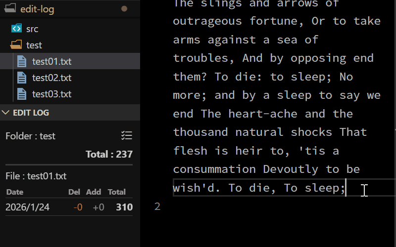

Edit Log

VSCodeのテキストファイル編集文字数記録の機能拡張
アクティブなファイルの削除・追加・総計文字数を記録して表示します。
エクスプローラーの下部に専用のウィンドウを表示します。
画面上部にはファイルが所属するフォルダ名とフォルダ内ファイルの合計文字数を表示します。
チェックリストアイコンからフォルダ内ファイル選択リストを表示し、合計から除外するファイルを設定できます。
VSCodeでのテキスト執筆活動の記録に便利な機能拡張です。